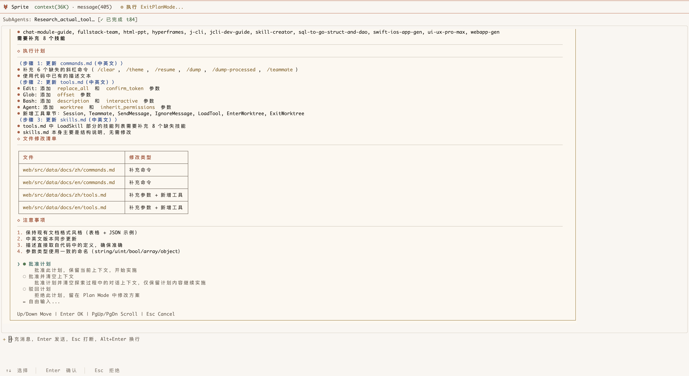

本科毕业设计 · 2026
基于多 Agent 协同的LLM 驱动复杂业务软件
从 ChatBot 到 Agent：让 AI 真正参与软件工程全流程
温俊杰 202230500125 答辩分享 · ~ 15 min
各位老师、同学们好，我是温俊杰，今天给大家分享我的本科毕设——基于 LLM Agent 的编程辅助工具设计与实现 。
这个项目的核心思路是：把 AI 从一个"你问它答"的 ChatBot，变成一个能主动读取代码、执行命令、管理上下文的 Agent 。我叫它 j-cli ，是一个命令行工具。
接下来我会从为什么做、做了什么、怎么做的、效果怎样 四个层面来讲。有问题随时打断我。
先按 S 可以打开演讲者视图，这里我准备了逐字稿。Let's go.
01 · 项目与背景 — jcli · AI 终端工作站
用 Rust 写的终端 Agent ，目标是把 AI + 开发一站式塞进命令行。
Agent 工作台 · 多模型、流式输出、工具调用、权限确认别名打开 · j chrome · j vscode ./src日报周报 · TUI 编辑、自动周数管理、Git 同步待办备忘 · Markdown checkbox · 长内容预览脚本工作流 · 工程化的 Skill / Hook
本项目制品分别位于四个开源仓库
JCLI 主项目
github.com/LingoJack/jcli
模板代码引擎 model_infrax
github.com/LingoJack/model_infrax
生成效果演示
github.com/LingoJack/gradiation_artifact_demo
JCLI Github Pages
lingojack.github.io/jcli
先把项目长什么样给大家看一下，等会讲设计的时候才有具体的对象。
这个项目叫 jcli ，是一个用 Rust 写的命令行工作台。最核心的功能是右上那张图里的终端 Agent ——多模型、流式输出、工具调用、权限确认，可以直接在仓库里读代码、改代码、跑命令。
除了 Agent，它还有几个比较实用的工具：别名打开 ，注册一次之后 j chrome、j vscode 这些都直接可用；日报周报 ，配 git 自动同步；待办备忘 ，TUI 界面 + Markdown checkbox。
右边这几张叠起来的图是项目的仓库和演示站点，都是开源的 。鼠标点上去能直接跳过去。
下一页我会从最朴素的问题讲起：为什么要做 Agent，而不是直接用 ChatGPT。
01 · 项目与背景 — 今天要讲的 6 个部分
01 项目与背景 ~4min
02 上下文治理与状态感知 ~6min
03 面向场景强化的工具 ~8min
04 多 Agent 协作试验 ~5min
05 模板代码生成引擎 ~4min
06 总结与展望 ~3min
先看一下今天的议程，总共六个部分。
第一部分讲背景 ——为什么我们要从 ChatBot 走向 Agent，这中间的核心差异是什么。
第二部分是整个项目的核心——上下文窗口治理 。LLM 的窗口有限，Agent 要长期运行就必须有一套机制来管理"往窗口里塞什么、丢掉什么"。
第三部分讲工具体系 ，从最基础的 Read/Write/Bash 几个工具开始，一步步说明每个新工具引入是为了解决什么问题。
第四部分讲多 Agent 协作 ——Teammate 和 SubAgent 怎么配合工作，以及错误处理和重试机制。
第五部分讲 Skill 系统 ——怎么把工程化能力封装成按需加载的技能包。
最后收尾总结。
01 · 项目与背景 — ChatBot 与 Agent 的上下文成本对比
ChatBot
人手动收集代码、报错日志、配置信息
复制粘贴到对话窗口
AI 给出建议，人手动修改代码
人承担上下文收集 和执行反馈
本质：人是物理世界和逻辑世界的桥梁
→
Agent
Agent 通过工具主动读取代码、执行命令
Agent 自动管理上下文窗口
Agent 自主决策、自主执行、自主纠错
Agent 承担上下文治理 和工具调用
本质：Agent 成为桥梁，人被抽离出来
先从最根本的问题开始——ChatBot 和 Agent 的区别到底是什么？
大家回想一下 2023、2024 年用 GPT 的场景。我们有 bug，需要自己 去收集代码、报错日志、运行环境信息，然后复制粘贴到 ChatBot 里，ChatBot 给出建议，我们再自己 去改代码。
这个过程里，人承担了两个关键角色：上下文收集者 和物理世界与逻辑世界的桥梁 。"物理世界"就是你的代码、文件系统、终端；"逻辑世界"就是 LLM 的思考空间。
而 Agent 的核心转变就是：通过上下文窗口的治理 和工具的使用 ，Agent 自己承担了这些角色，人被抽离了出来。
但这带来一个新的挑战——Agent 怎么在一个有限的上下文窗口里，长期稳定地工作？这就是我整个毕设要解决的核心问题。
01 · 项目与背景 — ReAct 核心循环
Agent 不是一次推理出全部答案。它逐轮思考、调工具、读结果、再思考 。
Thought · 读当前上下文，决定下一步Action · 输出符合 JSON Schema 的 tool callObservation · 运行时执行工具，把结果序列化回灌窗口Update · 窗口变大，进入下一轮 Thought
接下来六页用一个真实任务演示这个循环 —— 同时观察上下文窗口是怎么被填满的。
Thought
Action
Observation
Update
window grows
each round
Agent 的心脏是 ReAct 循环 —— Reasoning + Acting 的合写。
每一轮分四步：Thought 看上下文决定动作；Action 生成结构化的 tool call；Observation 运行时真正执行工具、把结果回灌窗口；Update 进入下一轮。
这页讲的是概念 。后面六页我会用一个真实任务，逐帧演示这个循环到底怎么跑、窗口怎么变化。
01 · 项目与背景 — ReAct 逐帧演示
用户的需求不是机器指令 。Agent 需要先把它翻译 成可执行的工具调用。
"总结" → 需要看目录结构
"可优化的模块划分" → 需要读关键源文件
用户没说去哪儿看，Agent 自己定位
此时窗口里只有：System prompt + 用户这一句话。
jcli chat · session #42 ~/dev/j
USER @me
总结一下 src/command/chat 目录的结构，以及可以优化的模块划分。
state:
Thought
Action
Observation
Update
第一帧 —— 用户给一个开放性需求："总结一下 src/command/chat 目录的结构和可优化的模块划分"。
注意这句话不是指令 。用户没说"跑 ls"也没说"读哪个文件"。Agent 要把这句模糊的需求翻译成一连串具体的工具调用 。
这时候窗口里只有系统提示和这一行用户输入，占用 6%。下一帧 Agent 开始思考。
01 · 项目与背景 — ReAct 逐帧演示
Agent 先列目录 看全貌 —— 这是面对未知项目最常见的第一步。
选择工具 Bash，因为要枚举文件
参数符合 JSON Schema，运行时能直接解析
用 ls -F 区分文件与目录
注意：Agent 的"想法"也被写进上下文窗口 —— 它是后续轮次的决策依据。
jcli chat · session #42 ~/dev/j
USER
总结一下 src/command/chat 目录的结构……
AGENT thought
用户要总结目录结构，先列出 chat/ 下的文件分布。
state:
Thought
Action
Observation
Update
第二帧 —— Agent 想了一下。它的思考过程也会被记录进窗口，这条 thought 写得很短："先列出 chat/ 下的文件分布"。
然后它生成一个 tool call 。注意这不是简单的"我想跑这个命令"，而是一个结构化的 JSON ，运行时能直接拿去执行。参数明确包含 command 和 description 两个字段。
窗口从 6% 涨到 9% —— thought 加 tool call 占了 3%。这个增长很小，因为消息很短。但你想，跑十几轮之后会怎样？这就是上下文压力的来源。
01 · 项目与背景 — ReAct 逐帧演示
运行时在真实 shell 里执行 tool call，把 stdout 序列化为 tool-result 消息，写回上下文。
12 个条目，足够建立粗略地图
Agent 在下一轮能看见这些文件名
结果以 文本形式 永久落在窗口里
这是 ReAct 的关键：tool 输出是会长期占用 token 的，不是临时变量。
jcli chat · session #42 ~/dev/j
AGENT thought
用户要总结目录结构，先列出 chat/ 下的文件分布。
state:
Thought
Action
Observation
Update
第三帧 —— 运行时执行 ls，把结果原样写回 到对话上下文，作为一条新消息。
这是 ReAct 最关键的一步 —— tool 的输出不是临时变量，是会一直占着 token 的消息 。你看 22 个条目就占了 5%。如果是 Read 一个 500 行的文件，就可能占 8-12%。
这就解释了为什么上下文窗口治理是核心问题 —— ReAct 的本质决定了窗口必然被工具结果撑满。
01 · 项目与背景 — ReAct 逐帧演示
Agent 看完目录，决定深入 app.rs —— 它是名字最像入口的文件。
选 Read 而非 Bash cat —— 结构化输出、自动行号
用 offset/limit 控量，不读全文
结果会很长，是窗口压力的主要来源
真实 Read 一次大约带回 60 行源码（800-1500 tokens）。
jcli chat · session #42 ~/dev/j
AGENT thought
app.rs 看起来是顶层入口，先读它的 struct 定义。
state:
Thought
Action
Observation
Update
第四帧 —— 第二轮 ReAct 开始。Agent 看完目录列表，决定深入 app.rs。它注意到这是入口文件。
这里 Agent 用的是 Read 工具而不是 Bash cat 。为什么？Read 工具返回带行号的结构化输出，Agent 后面想做 Edit 替换的时候能精确定位。另外 Read 有 limit 参数能控量 —— 不读全文。
结果回灌之后，窗口跳到 24%。两轮工具调用就用掉接近四分之一，这就是 ReAct 的真实压力。
01 · 项目与背景 — ReAct 逐帧演示
经过 3 轮工具调用 （ls + Read app.rs + Grep "pub struct"），Agent 拼出全貌。
窗口最终占用 38%
原始用户问题仅 1 行，结论却用了几千 token 才得到
价值密度低 —— 大量字符是 中间产物
下一节 · 上下文窗口治理：怎么让这些"中间产物"不污染长程任务。
jcli chat · session #42 round 3 done
AGENT final
src/command/chat 共 27 个文件，按职责分四层：入口 · mod.rs / app.rs / agent.rs状态 · UIState（55 字段） + ChatState（7 字段）I/O · handler/ · input_thread · render_cache扩展 · tools/ · skill · hook · compact
state:
round 1
round 2
round 3
summarize
最后一帧 —— Agent 把三轮工具调用的结果拼起来 ，给出真正回答用户问题的总结。
注意几个数字：3 轮工具调用 、窗口最终 38% 。但用户的原始问题只有一行字。中间几千个 token 几乎全是中间产物 —— 目录列表、源码片段、grep 匹配 —— 这些信息在结论给出之后价值就大幅下降 。
如果接下来用户继续问问题，这些中间产物就会一直占着窗口。这就是下一节要解决的问题 —— 上下文窗口治理 。
Section 02
上下文治理与状态感知
LLM 的窗口是物理硬上限。Agent 要长期运行，必须有一套机制来管理"往窗口里塞什么、丢掉什么"。
02 · 上下文治理与状态感知 — 问题与治理路径
上一章的 ReAct 循环已经展示：每轮工具调用的结果都会永久占用 上下文 token。轮次越多，窗口越满，Agent 开始幻觉、重复操作、忘记目标。
两条治理路径
分级压缩 · micro 快速替换旧工具结果为占位符，auto 调用 LLM 做深度摘要。均配备豁免机制 保护关键信息。优先级窗口 · 不是固定取最近 N 条，而是给消息打价值分，按 3:6:1 比例填充，保证方向性信息优先入窗。实测可稳定运行 2000+ 轮 。
Context Window · 128K tokens
90%+ 危险区
ReAct 循环的必然结果
每轮 Thought → Action → Observation 都在消耗窗口
工具结果是主要膨胀源，且价值衰减极快
两条治理路径
① 分级压缩
micro 快速替换 / auto 深度摘要
② 优先级窗口
3:6:1 价值比例填充
共同机制
豁免机制 · 保护高价值消息不被压缩失真
动态 System Prompt · 让 Agent 感知持续状态
第二章。上一章的 ReAct 循环已经直观展示了问题——每轮工具调用都在消耗上下文窗口，工具结果是主要膨胀源，且信息价值衰减极快。窗口被填满后，Agent 就会幻觉、重复操作、忘记目标。
我们的治理方案分两条路径。第一条：分级压缩 ——micro 级别快速把旧的工具结果替换成占位符，auto 级别调用 LLM 做深度摘要。两条路径都配豁免机制，保护关键信息不被压缩掉。第二条：优先级窗口 ——不是固定取最近 N 条消息，而是给消息打价值分，按 3:6:1 的比例填充窗口。实测可以稳定运行 2000+ 轮。
两条路径共享两个机制：豁免机制保护高价值消息，动态 System Prompt 让 Agent 感知当前正在发生的持续性事件。
02 · 上下文治理与状态感知 — 未治理的窗口膨胀现象
一个真实的 Agent 任务，五轮工具调用之后……
round 1
18%
系统提示 + 用户初始需求
round 2
38%
Glob 扫描项目结构 + Read 主文件 (~3K tokens)
round 3
62%
Grep 三次搜索 + Read 五个相关文件 (~8K tokens)
round 4
84%
Bash 编译 + 完整错误日志 + Edit 候选 diff (~10K tokens)
round 5
97%
超出健康区：Agent 开始忘记最早的需求，重复 Read 已读过的文件，编造不存在的函数名
compact
34%
auto compact 触发：摘要 + 清空 → 窗口回到健康水平，关键决策信息保留
给大家直观感受一下，不治理 会发生什么。这是我跑一个真实任务的窗口占用变化。
第一轮，刚发完用户需求，窗口才 18%——风平浪静。第二轮，Agent 用 Glob 扫了项目结构，又 Read 了几个主文件，已经到 38%。
第三轮是关键转折——Agent 开始大量 Grep 搜索 + 读相关文件 ，因为它要建立项目理解。每个 Read 都是几千个 token，五个文件就是上万。窗口冲到 62%。
第四轮跑了 cargo build，编译错误日志几百行，Edit 又产生了 diff，已经 84%。
第五轮，97% ——这是危险区 。Agent 开始幻觉，开始重复读已经读过的文件，开始忘记最初的需求。
这时候我们的 auto compact 触发——把对话历史总结成精简摘要，清空窗口重写。窗口回到 34%，关键决策保留。Agent 又能继续高效工作。
这个曲线是真实跑出来 的，不是画的示意。
02 · 上下文治理与状态感知 — 分级压缩与豁免机制
Micro 压缩 · 快速替换
将相对久远的工具调用结果替换为占位符 ，仅保留"调用了什么"而丢弃具体内容。速度快、token 释放量大，适合窗口接近上限时紧急腾空间。
Auto 压缩 · 深度摘要
调用 LLM 将整个对话历史总结为精简摘要，然后清空窗口 + 写入摘要 。成本较高但压缩彻底，适合 Agent 已运行很久需要"大扫除"的场景。
豁免机制 · 保护关键信息
无论 micro 还是 auto，以下消息不被压缩 ：
用户消息 · 需求源头
Agent 纯文本回复 · 决策记录
TodoWrite / Plan / Skill · 方向性信息
SubAgent 最终结果 · 调研结论
工具结果的价值衰减
工具类型 价值判断 豁免 Read 低 · 文件内容随编辑失效 No Bash 低 · 输出过时极快 No Edit 低 · diff 已被后续覆盖 No Write 低 · 与 Edit 同理 No Grep 低 · 搜索结果一次性 No TodoWrite 高 · 任务追踪 Yes Plan 高 · 执行方案 Yes Ask 高 · 用户意图确认 Yes Skill 高 · 能力定义 Yes
Bash / Edit / Read / Write 的信息价值随轮次衰减极快——第 20 轮时，第 3 轮的 Read 结果对决策几乎无价值。
分级压缩的第一级是 micro 压缩 。它做的事情很简单——把相对久远的工具调用结果替换成占位符。比如原来 Read 了一个 500 行的文件占 8K token，micro 压缩后变成"[Read src/main.rs · 500 lines]"这样一个占位符，只占几十个 token。速度快，适合窗口快满时紧急释放空间。
第二级是 auto 压缩 。它调用 LLM 把整个对话历史总结成一段精简摘要，然后清空窗口，把摘要写回去。成本高但压缩彻底——窗口从 97% 可以回到 30% 多。适合 Agent 已经跑了很多轮、需要一次大扫除的场景。
关键设计是豁免机制 。无论是 micro 还是 auto，高价值消息都不参与压缩：用户消息是需求源头、Agent 的纯文本回复是决策记录、TodoWrite/Plan/Skill 是方向性信息、SubAgent 最终结果是调研结论。这些一旦压缩就会导致 Agent 跑偏。
反过来，Bash、Edit、Read、Write 这些操作性工具的结果价值衰减极快——第 3 轮的 Read 结果，到第 20 轮时对决策几乎没价值了。所以它们不豁免，优先被压缩。
02 · 上下文治理与状态感知 — 优先级窗口：3:6:1 价值比例填充
固定取最近 N 条消息的问题：方向性信息可能在很早的位置 ，被新消息挤出窗口。我们把上下文当作推荐系统——给消息打价值分，优先填高价值的。
高价值消息类型
用户消息 · 需求源头，方向锚点TodoWrite · 当前任务追踪Clean （Plan clear-and-approve）· 执行方案Skill 加载 · 能力定义Agent 纯文本回复 · 决策记录
3:6:1 填充比例
在固定窗口内，按 3:6:1 比例分别加载高价值 / 中价值 / 低价值 消息。保证 Agent 在长程运行时始终能看到方向性信息。
实测：可稳定运行 2000+ 轮 消息持续任务，Agent 方向性保持稳定。
候选池 (按价值打分)
用户初始需求 p=1.00
Plan 文档 p=0.95
Agent 决策语句 p=0.90
TODO 当前任务 p=0.88
SubAgent 调研结论 p=0.85
Skill 加载内容 p=0.70
最近 3 轮 Read p=0.55
远期 Bash 输出 p=0.20
中间 Grep 结果 p=0.15
已被覆盖的旧 Edit p=0.08
SORT BY
→
FILL
装入窗口（3:6:1 比例）
用户初始需求 30%
Plan 文档 30%
Agent 决策语句 30%
TODO 当前任务 30%
SubAgent 调研结论 30%
Skill 加载内容 60%
最近 3 轮 Read 60%
远期 Bash 输出 10%
中间 Grep 结果 DROP
已被覆盖的旧 Edit DROP
优先级窗口要解决的问题是：固定取最近 N 条消息，方向性信息可能在很早的位置被新消息挤出 。比如用户在第 1 轮说"我要改认证模块"，到第 50 轮时这条消息可能已经不在窗口里了，Agent 就忘了自己在干什么。
我们的方案是把上下文当作推荐系统——给消息打价值分，优先填高价值的。高价值消息包括：用户消息（需求源头）、TodoWrite（当前任务追踪）、Clean 即 Plan clear-and-approve（执行方案）、Skill 加载（能力定义）、Agent 纯文本回复（决策记录）。
具体填充按 3:6:1 比例——30% 给高价值方向性信息，60% 给中等价值的近期上下文，10% 给低价值的执行细节。这样保证了 Agent 在长程运行时始终能看到方向性信息。
实测结果：可以稳定运行 2000+ 轮 消息的持续任务，Agent 方向性保持稳定。2000+ 还只是跑到那里的数字，理论上还能继续。
02 · 上下文治理与状态感知 — 动态 System Prompt：尾部追加的状态感知
另一个关键设计是动态 System Prompt 。System Prompt 不是一成不变的——它的尾部会根据当前状态动态追加信息。
基础部分是静态的：项目规范（比如 AGENTS.md 里定义的代码规范）、工具定义、环境信息、按需加载的 Skill 内容。
动态部分才是关键。当 Agent 之前启动了一个后台任务，但工具调用记录已经被压缩掉了，Agent 怎么知道这个任务还在跑？靠的就是System Prompt 尾部动态追加 的后台任务状态。同样的机制还用于：Teammate 的存在和状态、很久没更新过的 TODO 项目的提醒、当前正在进行的交互式 Session。
这个设计的核心思路是：让 Agent 感知当前正在发生的持续性事件 ，即使这些事件的原始上下文已经被压缩了。
Section 03
面向场景强化的工具
每个工具的引入都是为了解决一个具体问题——Grep 构建上下文、Ask 防漂移、Plan 先调研再执行、Edit 精确替换、执行三态自动流转。
03 · 面向场景强化的工具 — 渐进增强的设计哲学
现在进入第三部分——工具体系 。我的设计哲学是渐进增强 ：从最基础的几个工具开始，每个新工具的引入都是为了解决前面遇到的特定问题。
最底层是基础层 ：Read、Write、Bash、LoadSkill。有了这四个工具，Agent 理论上就能工作了——能读文件、写文件、执行命令。但实际上远远不够。
第二层是增强层 。每个工具都有明确的引入动机：Grep 让 Agent 面对未知项目时能高效搜索，比用 Bash grep 质量稳定得多；Ask 给用户一个澄清意图的入口，避免做出来的东西跟预期漂移；Plan 帮 Agent 提前想清楚再动手，减少改不全的问题；WebFetch/Search 增强 Agent 获取最新知识的能力。
第三层是协作层 ：TodoWrite/Read 帮 Agent 追踪进度、避免遗漏；SubAgent 委派调研任务以低成本收集上下文；Teammate 实现多 Agent 协作；Session 处理交互式命令。
03 · 面向场景强化的工具 — Grep 与 Ask 工具的设计动机
Grep：构建上下文的关键工具
面对一个未知的项目，Agent 需要主动搜索代码来构建上下文 。
没有 Grep： Agent 只能通过 Bash 执行 grep 命令，匹配质量不稳定、输出格式难解析、速度慢。
有了 Grep： 结构化搜索结果，支持正则、文件类型过滤、上下文行数、分页。Agent 能高效定位目标代码。
Ask：防止需求漂移的阀门
用户的需求描述往往模糊或不完整，Agent 如果盲目执行，最终产物可能与用户预期严重漂移 。
没有 Ask： Agent 猜测意图，做完后发现不是用户想要的，返工成本高。
有了 Ask： Agent 可以在关键决策点征询用户意见，扩展明确需求，避免方向性错误。
我挑两个典型工具展开讲一下，说明每个工具引入背后的问题驱动 思路。
先说 Grep 。Agent 面对一个从来没见过的项目，它怎么知道代码在哪？它需要搜索。没有 Grep 工具的时候，Agent 只能通过 Bash 执行 shell 的 grep 命令。但 shell grep 的输出格式不稳定，Agent 解析起来容易出错，而且缺乏上下文行、文件类型过滤等高级功能。
有了专用的 Grep 工具，搜索结果是结构化的——带行号、带上下文、支持正则、支持文件类型过滤。Agent 能快速定位到目标代码，这是它主动构建上下文的关键能力 。
再说 Ask 。用户说"帮我做一个好看的页面"，这需求太模糊了。如果 Agent 不问就直接做，做完发现用户要的是红色风格，Agent 做了个蓝色的——这就是需求漂移 。Ask 工具让 Agent 在不确定的时候主动向用户确认，在关键决策点征询意见。一个简单的确认，可能省掉几个小时的返工。
03 · 面向场景强化的工具 — Plan + Edit：先规划后执行
P
Plan 工具：先调研，再规划，后执行
问题： LLM 有时候没想清楚就开始改代码，导致变更不完整、改了 A 漏了 B，且调研过程占用大量上下文。
方案： 进入 Plan 模式 → 只读调研（Read/Grep/Glob）→ 制定自包含执行计划 → 清空上下文 → 按计划执行。调研信息不污染执行阶段窗口。
E
Edit 工具：精确替换，非全文覆写
问题： Write 工具只能全文覆写文件，对大文件的微小改动效率极低，且容易引入意外修改。
方案： Edit 工具基于精确字符串匹配 做局部替换，只发送 diff 而非全文，大幅减少 token 消耗和错误率。
接下来讲两个对编码场景特别关键的工具。
Plan 工具 解决的问题是：LLM 经常没想清楚就开始动手。比如用户说"把这个函数重构一下"，Agent 直接去改代码，改了三处漏了两处，最后还不如不改。
Plan 的设计是：先进入一个只读调研模式 ——只能用 Read、Grep、Glob 这些工具去了解项目。调研完之后，制定一个完整的执行计划。然后做一个关键操作——清空上下文 。调研阶段读了几十个文件，这些信息占了很多窗口空间，但真正执行的时候用不到那么多。清空之后，只把计划文档写进去，Agent 就能在干净的窗口里按计划高效执行。
Edit 工具 解决的是 Write 工具的粗粒度问题。Write 只能全文覆写，但如果一个文件有 500 行，你只改第 200 行的一个函数名，用 Write 就要把 500 行全部发给 LLM 再全部写回来。Edit 只需要指定"把这段旧字符串替换成这段新字符串"，精确、高效、不容易出错。
03 · 面向场景强化的工具 — Plan 工作流全貌
问题：LLM 习惯边想边改 。调研读了 30 个文件，写代码时窗口已无空间。
调研阶段读的源码 ≠ 执行阶段要写的代码
但都挤在同一个 窗口里
导致 Agent 改一处忘一处、忘记原始约束
方案：把调研和执行物理隔离
三阶段：① 只读调研 → ② 写 plan.md + 用户审批 → ③ 清空窗口，只留 plan.md，开始改代码
① 调研
Read · Grep · Glob
只读模式
window: 60%
② 写 plan.md
自包含执行计划
用户审批
window: 65%
③ 执行
Edit · Write · Test
仅保留 plan.md
window: 12%
CLEAR ↑
调研窗口丢弃
Plan 工作流要解决的核心问题是：LLM 习惯边想边改 。它读了 30 个文件理解项目，然后直接开始改代码 —— 但这时候窗口里全是调研产生的源码片段，根本没空间装新的改动。
方案是把调研和执行物理隔离 ，关键是中间那一步清空窗口 —— 把几十 K 的调研结果全丢掉，只留下一份用户审批过的 plan.md。
接下来三页用一个真实重构需求演示这个过程。
03 · 面向场景强化的工具 — Plan 模式只读调研
用户提出重构需求 → Agent 进入 Plan 模式 → 工具集被限制为只读 。
能用 Read / Grep / Glob / WebFetch
不能 Edit / Write / Bash 写命令目的：让窗口装满"理解"，但不产生副作用
窗口已涨到 60% —— 这是 Plan 阶段的正常代价。
jcli plan-mode · session #78 read-only
USER
把 ChatApp 拆分成 UIState 和 ChatState，55 个字段太挤了，难维护。
AGENT enter plan-mode
进入 Plan 模式。先调研：app.rs 当前结构、所有引用 ChatApp 字段的位置、handler 模块依赖。
用户说 "把 ChatApp 拆分成 UIState 和 ChatState"。这是个跨越多个文件的重构。
Agent 进入 Plan 模式，工具集被自动限制为只读 —— Edit、Write、Bash 写命令全被禁用。Agent 只能 Read、Grep、Glob、WebFetch。
它跑了三个 Grep 把所有引用点定位出来：76 处 ui_ 字段、23 处 state_ 字段。窗口涨到 60% —— 看起来很多，但下一步就要丢掉了 。
03 · 面向场景强化的工具 — 输出计划并审批
调研结论沉淀 为一份执行计划，由用户在终端里直接三选一 。
批准计划 ：保留当前上下文，开始实施批准并清空上下文 ：仅保留计划，丢弃所有调研产物驳回计划 ：留在 Plan Mode 修改方案
右图是真实运行时的审批界面 —— 注意顶部 SubAgents 行（已派子 Agent 做调研）和 context 计数。

jcli plan-mode 真实截图 · 含 SubAgent 调研、计划清单、批准/清空上下文 / 驳回三选项
context
36K tokens · 等待审批
第二阶段 —— Agent 把调研结论沉淀 成一份 plan.md。注意几个特点：每一步都写明动哪个文件、加什么删什么 ，包含验证步骤 （cargo build 和 test）。
plan.md 此时是个变更契约 —— 用户可以审批、可以驳回、可以提修改意见。这一步是对齐预期的最后一道闸 。
一旦 approve，下一步就是关键 —— 清空上下文。
03 · 面向场景强化的工具 — 清空窗口按计划执行
窗口从 65% 回到 12% ：调研产生的 30+ 工具结果全部丢弃。
Agent 重新启动，上下文只含 plan.md
工具集恢复为完整集 （Edit / Write / Bash）
不再有调研中间产物干扰决策
这就是 idea 里说的 clear & approve 机制
代价：忘掉调研细节 / 收益：执行阶段窗口干净，错误率显著下降
execute-mode · session #78 (new ctx) full tools
SYSTEM context cleared
上下文已清空。仅保留 plan.md (~1.2K tokens)。可使用完整工具集。
AGENT step 1/5
按 plan.md step 1：创建 ui_state.rs。
AGENT step 2/5
step 1 done. 进行 step 2：创建 chat_state.rs。
context
12% · clean window
第三阶段 —— 关键操作。窗口被清空 。原本 65% 的调研产物全部丢弃。新的上下文里只有一份 plan.md，1.2K token 左右。窗口占用回到 12%。
Agent 重新启动，工具集恢复完整。它对照 plan 一步一步做 ：step 1 创建 ui_state.rs、step 2 创建 chat_state.rs ……
这个机制的代价是 Agent 忘掉了调研细节 。但收益更大 —— 执行阶段窗口干净，不被中间产物干扰，错误率显著下降。这就是 clear and approve 的本质。
03 · 面向场景强化的工具 — 执行三态概览
一条命令怎么跑，取决于它跑多久 、要不要 stdin 。Bash，运行时自动落到对的形态。
Bash · 同步 · 默认 120s（最大 600s）阻塞返回 stdout/stderr。ls · cargo check · 短命令首选。BackgroundTask · 异步 · run_in_background:true 立即返回 task_id；用 TaskOutput 阻塞等待或非阻塞查询。cargo build · dev server。Session · 交互 · interactive:true 走 PTY 启动，返回 sid；用 Session 工具 stdin / stdout / quit 双向操作。REPL · 需 y 确认的安装。
同步 Bash 跑过 30s 仍未结束 —— 不 kill ，adopt_process 移交 BackgroundManager，立即返回 task_id。但升级前若检测到最近 N 秒完全无输出（静默判交互），则 kill 并提示 Agent 加 -y 或改用 interactive:true。
运行时自动流转
time →
Bash · sync
spawn
poll · ≤ 120s
stdout/err
快命令：阻塞等完返回
> 30s
adopt_process
(不 kill)
Background
spawn → tid
running
TaskOutput
reader 线程实时写 buffer
Session · PTY
PTY → sid
stdin ⇄ stdout · loop
quit
portable_pty · drop writer → SIGHUP
— 实线 · 显式调用 - - 虚线 · 自动流转 constants: DEFAULT_TIMEOUT=120 · AUTO_BG=30 · INTERACTIVE_SILENCE
这一页讲 Agent 的命令执行模型。三种形态：同步 Bash、异步 Background、交互 Session 。
关键设计是入口统一 —— Agent 调用的都是 Bash 工具，只是参数不同：什么都不加是同步；加 run_in_background:true 走异步；加 interactive:true 走 PTY。Agent 不用预判命令会跑多久。
右图三条泳道是横轴时间。重点看那条虚线箭头 —— 同步 Bash 跑过 30 秒还没结束，运行时不会 kill 进程 ，而是把这个已经在跑的进程连同 reader 线程一起移交 给 BackgroundManager，返回 task_id。Agent 拿到 task_id 之后可以先去做别的事，过一会儿用 TaskOutput 取结果。
但这又引入新问题：命令是慢、还是在等用户输入？ 外面看都是"没输出"。所以升级前我加了一道静默检测 —— 如果最近 N 秒一点输出都没有，那大概率不是慢，是在等 stdin。这时候不该升级，而是 kill 掉，提示 Agent 加上 -y 之类的非交互标志重跑，或者改用 interactive:true 走 Session。
下一页用真实代码展示这两个关键机制的实现。
03 · 面向场景强化的工具 — 执行三态实现
① 超时自动升级
同步 Bash 跑过 SHELL_AUTO_BG_SECS（30s）仍未结束：
静默检测 — N 秒无输出 → 疑似交互 → kill + 提示
非静默 → 不 kill ，adopt_process 移交 BackgroundManager
立即返回 task_id，Agent 继续做别的事
后台监控线程等 reader 写完后调 complete_task
② PTY 交互式会话
用 portable_pty 分配伪终端：
openpty → spawn_command 启动进程try_clone_reader → Session stdouttake_writer → set_pty_writer 注册到 BgTaskSession 工具的 stdin/stdout/quit 直接操作 PTY 句柄
quit = drop writer → SIGHUP 自然退出
shell.rs · execute_sync 自动升级real code
// 超过阈值仍未结束，不 kill，移交后台
if start.elapsed() >= auto_bg_threshold {
// 静默判交互：最近 N 秒无输出 → 等 stdin
if silence_elapsed >= Duration::from_secs (SILENCE) {
let _ = child.kill (); // 提示加 --yes
return ToolResult { output: hint, is_error: true , .. };
}
// 真正升级：adopt 当前进程，立即返回 task_id
let (task_id, bg_buffer) =
self.manager.adopt_process (command, pid, start) ;
// 后台监控：等 reader 写完 → complete_task
std::thread::spawn (move || {
let _ = stdout_thread.join ();
manager.complete_task (&tid, "completed" , out);
});
return ToolResult { output: json!({ "task_id" : task_id }), .. };
}
shell.rs · execute_interactive 起 PTYreal code
let pty = NativePtySystem::default ();
let pair = pty.openpty (PtySize { rows: 24 , cols: 80 , .. })?;
let _child = pair.slave.spawn_command (builder)?;
let reader = pair.master.try_clone_reader ()?; // stdout
let writer = pair.master.take_writer ()?; // stdin
self.manager.set_pty_writer (&task_id, writer) ;
// Session 工具通过 sid 调 stdin / stdout / quit
这一页用真实代码展示两个关键机制的实现。
adopt_process 自动升级 。代码里的核心逻辑是：超过 30s 阈值后，先做静默检测——如果最近 N 秒一点输出都没有，说明命令不是在跑，而是在等人输入，这时候 kill 掉给提示。如果不是静默，就调 adopt_process 把当前进程移交给 BackgroundManager，不 kill，返回 task_id。后台有个监控线程等 reader 写完后调 complete_task。
PTY Session 。用 portable_pty 库分配伪终端。关键三行：clone reader 给 Session 读输出、take writer 给 Session 写输入、set_pty_writer 注册到 BgTask。之后 Session 工具的三个操作都是直接操作 PTY 句柄：stdin 写入、stdout 读 buffer、quit 就是 drop writer 让进程收到 SIGHUP。
03 · 面向场景强化的工具 — 防遗忘机制
TodoWrite/TodoRead
Agent 在开始大任务前列出所有子任务。每完成一个就更新状态。避免遗漏变更、避免忘记目标。
[x] 改 ChatApp.update 增加 Action
改 handler/tui_loop.rs 调用点 (in_progress)
[ ] 写测试覆盖新分支
[ ] 更新 CODEBUDDY.md
system_reminder 注入
当 Agent 长时间没有更新 TODO，系统在下一轮 prompt 尾部动态注入提醒 ，把它拉回正轨。
Agent: <读了 5 个文件，跑了 3 次 grep…>
system_reminder: in_progress : "改 handler/tui_loop.rs 调用点"
Agent: 我先把 in_progress 的标记完成，再继续……
讲一个特别有用的小工具——TodoWrite + system_reminder 。这看着简单，但对 Agent 长期运行有奇效。
问题是这样的：Agent 跑一个大任务，可能要改十几个文件。如果它没有显式的待办清单，跑着跑着就忘记原本要做的事 。改了两个就觉得任务完成了，剩下的就漏了。
所以我让 Agent 在开始大任务前先列出所有 TODO 项 。每完成一个就更新状态。这本身就强迫它把任务结构化拆分 。
但还有个更巧妙的设计——system_reminder 注入 。如果 Agent 连续好几轮都没更新 TODO，但 TODO 里还有 in_progress 项，系统就会在下一轮 prompt 尾部 注入一条 system_reminder：「你还有 4 个 TODO，其中一个 in_progress 已经 8 轮没动了，是不是该看看？」
这相当于一个软中断 ——不强行打断 Agent，但在它注意力分散的时候轻轻拉一下。实测对完成度提升非常明显。
03 · 面向场景强化的工具 — Hook 系统：14 个事件钩子覆盖 Agent 生命周期
每个事件可挂载 Shell / Prompt 类型的 Hook —— 用作回归测试 + 工程规范 + 变更沉淀
session_start
pre_send_message
post_send_message
pre_llm_request
post_llm_request
pre_tool_execution
post_tool_execution
post_tool_execution_failure
pre_micro_compact
post_micro_compact
pre_auto_compact
post_auto_compact
stop
session_end
session 生命周期
消息收发
LLM 调用
工具执行
压缩前后
工程规范强制
在 post_tool_execution(Write/Edit) 后扫描新增/变更文件：禁用 mod.rs、禁用 unwrap()/expect()、要求 name.rs + name/ 布局。
回归测试守门
在 stop 事件触发时跑 cargo fmt && cargo clippy -- -D warnings && cargo test。任何一项失败，Agent 必须修复才能真正"结束"。
变更沉淀文档
在 session_end 时把本次会话的关键变更摘要 追加到 CHANGELOG / decision log，供后续追溯维护。
Hook 系统是 Agent 真正能"用于生产"的关键。它把工程规范固化成自动执行的脚本 ，跑在 Agent 整个生命周期的各个事件点上。
一共 14 个事件 ，覆盖 session 启停、消息收发、LLM 请求前后、工具执行前后、压缩前后。每个事件都可以挂载 Hook，Hook 接收 JSON 输入、返回 JSON 修改 / 拦截。
给大家三个真实用例。
第一个是工程规范强制 。我们项目要求所有模块用 name.rs + name/ 这种布局，不能用 mod.rs。也禁止用 unwrap()、expect() 这种容易 panic 的写法。这些规则做成 Hook 挂在 post_tool_execution 上，Agent 写了违规代码立刻被拦截。
第二个是回归测试守门 。Agent 说"我做完了"，要触发 stop 事件。Hook 拦截这个事件去跑 fmt、clippy、test。全过才允许真正退出。
第三个是变更沉淀 。session 结束时自动写变更摘要到 CHANGELOG，方便后续追溯。这个对长期维护项目特别重要。
Section 04
多 Agent 协作
两种协作模式——Teammate 对等协作 + SubAgent 委派调研。共享消息通道的设计、可见性控制、以及三个递进实验验证。
04 · 多 Agent 协作 — 两种协作模式
Teammate · 对等协作
独立 Agent 实例，各有专属上下文和工具集。通过 SendMessage 广播 + @提及 定向通信。支持 WorkDone 声明完成，@self 可重新激活。多 Teammate 共享消息通道，形成聊天室。
SubAgent · 委派调研
临时子 Agent，独立窗口完全隔离 。无收件箱、不能发消息。执行完毕后仅回灌精简摘要（~1.5K tokens）到主 Agent 上下文，主窗口仅微增 4%。
客观评估
参考 Anthropic 研究——模型倾向偏袒自己的工作。通过聊天室让其他 Agent 交叉评审，实现相对客观的质量评估。
Teammate 协作架构
broadcast_inbox
context_messages
display_messages
SubAgent 委派架构
→prompt
←摘要
context XML-wrapped
第四部分，多 Agent 协作。j-cli 支持两种协作模式。
Teammate 是对等的 Agent 实例——每个都有独立的上下文窗口和工具集。它们通过 SendMessage 广播消息，用 @提及 定向通信。支持 WorkDone 声明完成，被 @self 提到可以重新激活。右上的架构图展示了三通道设计：broadcast_inbox 是每个 Teammate 的收件箱，context_messages 是注入 Main Agent LLM 上下文的通道，display_messages 是 TUI 渲染通道。
SubAgent 完全不同——它是临时雇员，在独立窗口里执行任务，不能收发消息，执行完只回灌一段摘要。三份调研合计 ~71K tokens 在 SubAgent 独立窗口里消耗，主 Agent 只收到三段 1.5K 的摘要，窗口仅微增 4%。
还有一个有意思的设计——客观评估 。Anthropic 研究指出模型倾向偏袒自己的工作，通过聊天室让其他 Agent 交叉评审，能拿到相对客观的反馈。
04 · 多 Agent 协作 — 消息通信设计与可见性
三通道架构
broadcast_inbox — 每个 Teammate 的收件箱，其他 Agent 广播投递context_messages — 注入 Main Agent LLM 上下文（XML-wrapped <From>text</From>）display_messages — TUI 渲染（clean text + sender_name）
SendMessage Gate · 防重复发送
Agent Loop 长时序异步，发完 SendMessage 不原地等 → 下一轮可能重发。解决方案：Gate 重评估 ——Teammate 调 SendMessage 前检查 broadcast_inbox 是否有新消息。有则 hold + 注入 system_reminder 让 Agent 重新决策，最多重试 2 次。
teammate_loop.rs · SendMessage Gate
if item.name == "SendMessage" {
let inbox_has_new = inbox.lock()
.map(|i| !i.is_empty()).unwrap_or(false );
if inbox_has_new && retries < MAX_GATE_RETRIES {
gate_triggered = true ;
// hold: return placeholder, inject system_reminder
continue ;
}
}
消息可见性矩阵
Main Agent Teammate SubAgent Own messages Full Full Full Other agent text context (XML) broadcast_inbox None Other tool calls <Name>[called X] Not visible None Other tool results Not pushed Not visible None Can SendMessage Yes Yes No Can receive main_inbox broadcast_inbox No
设计原则 : 决策信息多放（other agent text），执行中间过程少放（tool results 不推）。SubAgent 完全隔离——不能收发消息，只回灌摘要。
这一页讲多 Agent 之间消息怎么流转、谁能看到什么。
首先是三通道架构 。同一逻辑消息有两种物理表示：display 通道给 TUI 渲染，用 clean text；context 通道给 Main Agent 的 LLM 上下文，用 XML-wrapped 标签标出来源。这样 Main Agent 在推理时能知道"这段话是谁说的"。
然后是 SendMessage Gate ——这是解决重复消息的机制。Agent Loop 是长时序的，Agent 发完消息不原地等，下一轮可能以为没发出去就重发。我的方案是：Teammate 调 SendMessage 之前，先检查 broadcast_inbox 有没有新消息到达。如果有，就 hold 住这条 SendMessage，注入 system_reminder 告诉 Agent "你在想的时候新消息到了，请重新决策"。最多重试 2 次。这不是传统的两阶段提交，而是一个重评估门控。
右边的可见性表格展示了三者的信息不对称设计：Main 能看到其他 Agent 的文本和工具调用名；Teammate 只能看到广播文本；SubAgent 完全看不到其他 Agent。工具结果一律不推入其他 Agent 的上下文——因为这些执行中间过程价值低但 token 占用高。
04 · 多 Agent 协作试验 — 消息传递与唤醒
What · 任务设置
2–3 个 Teammate 按预设顺序完成 1 → N 的递增报数。每个 Agent 收到上一位 SendMessage 后报下一个数，并 @target 唤醒下一位。
Why · 为何先做这个
把语义难度降到最低，只暴露 3 个系统问题 ：消息投递、目标唤醒、轮次顺序。SendMessage Gate 的设计——长时序 Agent Loop 容易重复发送同一消息。
How · 验证方式
统计完成率、顺序错误数、唤醒失败数；通过 transcript.jsonl 复盘消息进入收件箱与唤醒标记。
论文表 7-10 · 实测结果
目标数字数 10 正确报数数 10 / 10 · 100% 顺序错误数 0 唤醒失败数 0 SendMessage 调用 16 次 人工干预次数 0
10 个目标全部按序完成，顺序错误与唤醒失败均为 0 —— 证明消息层机制可用 。SendMessage 多于目标数，反映协作协议本身的固定通信开销。
实验一是最基础的——几个 Agent 轮流报数 1、2、3。看起来简单，但要求 Agent 不抢话、不重复、不跳号。
这个实验最关键的作用是暴露问题 。我做这个实验的时候发现，由于 Agent Loop 是长时序异步的，Agent 发完消息看不到自己发的，会以为没发出去再发一遍。这直接驱动了 SendMessage Gate 的设计——上一页已经讲了。
论文表 7-10 的实测：10 个数字全部按序完成，顺序错误 0，唤醒失败 0，人工干预 0。SendMessage 调了 16 次比目标数多，这是协作协议的固定开销。
04 · 多 Agent 协作试验 — 共享上下文一致性
任务设置
多个 Teammate 轮流续写一句故事，保持人物、地点、时间线和事件因果一致。
检验目标
实验一只验证"能按序发言"，本实验进一步检验共享上下文 ——每个 Agent 是否真能读到前文设定。如果 shared_messages 广播有 bug，故事会立即跑题。
验证方式
统计完成轮数、偏题次数、重复内容次数、人工干预次数。
论文表 7-11 · 实测结果
目标续写轮数 13 完成续写轮数 13 / 13 · 100% 偏题次数 0 重复内容次数 1 人工干预次数 0
共享上下文有效 ：13 轮全部完成，偏题 0、人工干预 0。仅 1 次重复——角色「反转之王」被催促后重发了同句，提示仍需消息去重 / 过期约束 。
实验二把验证重点从"能按序发言"推进到"能否沿用同一组事实"。
实验结果论文表 7-11：13 轮全部完成，偏题 0 次，人工干预 0 次——说明共享上下文确实让 Agent 能读到前文设定。
有一次重复——「反转之王」这个角色被 Main 催促后重发了同样的内容。这说明协作协议可以自主完成，但仍需要消息去重和过期约束 。对应到工程场景就是：多 Agent 可以共享需求和接口事实，但任务边界必须明确。
04 · 多 Agent 协作试验 — 开发-测试协作
What · 任务设置
Developer + Tester 双角色协作。任务是给前面端到端生成的电商网页项目追加 45 项验收清单 （A 类页面跳转 20 + B 类浏览历史 15 + C 类 UX 改进 10）。Tester 把需求拆为可验收项 → 跑构建/静态检查 → SendMessage 反馈失败项 → Developer 修复 → 复验。
Why · 客观评估的关键
参考 Anthropic harness-design-long-running-apps ：模型对自己的工作有偏袒 ，倾向给自己打高分。让另一个 Agent 做评审 才能得到相对客观的反馈，形成"实现—验证—反馈—修复—复验"的工程闭环。
论文表 7-13 · 实测结果
A 类 · 页面跳转 20 / 20 B 类 · 浏览历史 15 / 15 C 类 · UX 改进 10 / 10 需求完成率 45 / 45 · 100% 第 1 轮验收 41 通过 / 4 失败 第 2 轮复验 45 / 45 全过 Tester 反馈轮次 2 轮 Developer 修复轮次 1 轮 协同冲突 / 重复劳动 0 / 0 人工干预 2 次（仅流程调度）
闭环完整：需求清单 → 实现 → 首轮验收 → 反馈 → 集中修复 → 复验通过 。Tester 发现的 4 个失败项都是局部细节（字段缺失、路径不一致等），未涉及架构级偏差。
实验三是真实工程场景了——电商网页项目追加 45 项验收清单。Developer 写代码，Tester 验收。
这里有个关键设计动机参考了 Anthropic 那篇 harness-design 文章——模型容易对自己的工作过度满意 ，让另一个 Agent 来评审才能拿到客观反馈。
结果论文表 7-13：第 1 轮 41 通过 4 失败，Developer 一次性修完那 4 项，第 2 轮 45/45 全过。需求完成率 100%、协同冲突 0、重复劳动 0 。两次人工干预都是流程调度层面（提醒创建 Tester、提醒启动验收），不涉及代码或需求理解。
顺便提一句健壮性——LLM API 难免遇到限流、超时，我用指数退避 自动处理瞬态故障（1s → 2s → 4s），不打断协作流程。
04 · 多 Agent 协作 — SubAgent：低上下文成本的调研委派
上下文隔离
独立消息窗口，不继承父 Agent 历史。SubAgent 以 prompt 为唯一起点，在自己的窗口里 Read / Grep / WebFetch。
工具隔离
独立 ToolRegistry，排除 Teammate / Agent 工具（防递归）。可选 worktree 创建独立 git 工作树。
结果回灌
执行完毕后，仅回灌精简摘要到主 Agent：
display — clean text + sender_namecontext — XML-wrapped <SubAgent@Name>摘要</SubAgent@Name>工具结果不推入 context（token 占用高、价值低）
主 Agent
context: 38%
↓ 派遣调研任务
↑ 仅回灌精简摘要 (~1.5K tokens)
SubAgent A
调研 auth 模块
Read 12 文件
独立窗口 ~22K tokens
SubAgent B
调研 storage 层
Read 18 文件
独立窗口 ~31K tokens
SubAgent C
调研 hook 系统
WebFetch 文档
独立窗口 ~18K tokens
三份调研合计 ~71K tokens 在 SubAgent 独立窗口里消耗，主 Agent 仅微增 4%
SubAgent 和 Teammate 不一样——Teammate 是平等的协作者，SubAgent 是临时雇用的调研员 。
核心思想是上下文隔离 。主 Agent 想要了解一个未知模块，如果自己去 Read 十几个文件，主窗口会被瞬间填满几十 K token。这些原始内容里 90% 都是噪音，主 Agent 真正需要的只是一段结论 。
隔离体现在三个层面：上下文隔离 ——独立消息窗口，不继承父 Agent 历史，以 prompt 为唯一起点；工具隔离 ——独立 ToolRegistry，排除 Teammate 和 Agent 工具防止递归，可选 worktree 创建独立 git 工作树；结果回灌 ——执行完毕后只推精简摘要，工具结果不推入主 Agent 上下文。
右边这张图——三个 SubAgent 并行调研，每个用掉 20-30K tokens 的独立窗口。但主 Agent 收到的只是三段总计 1.5K 的摘要。主窗口仅微增 4% ，但获得了三个模块的完整理解。
这就是"以较低的上下文成本了解调研目标 "——也是 SubAgent 这个抽象最大的价值。
Section 05
模板代码生成引擎
把高度模板化的代码交给确定性生成器，LLM 只做需求理解和增量集成。jen 处理数据层，webapp-gen 驱动全栈工作流。
05 · 模板代码生成引擎 — 确定性代码的模板化生成
What · 这一章在讲什么
把高度模板化、不侵入业务 的代码——例如 PO/DTO/VO/DAO、CRUD 方法、列表查询——交给确定性生成器 ，而不是让 LLM 现场逐字写。
Why · 为什么这件事值得做
占比高 ：业务系统中模板代码常占大部分规则强 ：字段名、类型映射、CRUD 方法签名几乎可推导易出错 ：LLM 写时容易字段漂移、类型错、方法名不一致耗 token ：51 张表用 LLM 直生 ≈ 24M token / 53 min（论文 §7.4）
How · 两层落地
① jen ：自研 SQL parser + Go template，把 SQL → PO/DTO/VO/DAO/Tool。② webapp-gen ：脚手架 + 原型驱动工作流，把"项目骨架"模板化。封装为 Skill ——按需加载、不污染上下文。
两条路径处理同一份 SQL schema
LLM 直接生成
SQL
LLM 逐字推理
PO/DTO/VO/DAO
字段漂移 · token 高 · 慢
模板化生成（jen）
SQL
parser
template
代码
100% 字段对齐 · token 1/50 · 27× 加速
数字来源：论文表 7-8 / 7-9 · 51 张表 DAO 全生成
第五章讲模板代码生成引擎 ，重点对象是 jen。
核心问题是：业务系统里有大量结构高度可预测 的代码——PO/DTO/VO/DAO、CRUD 方法、列表查询。这些代码占比高、规则强 ，但 LLM 写起来易出错、耗 token 。论文 §7.4 实测，让 LLM 直接为 51 张表生成 DAO，烧了 24M token、跑了 53 分钟。
方案是把这部分代码从 LLM 生成链路里剥离 ——交给确定性生成器 jen。Agent 负责理解需求 + 准备输入 + 检查产物，不再逐字写模板代码。
下一页详细讲 jen 的架构。
05 · 模板代码生成引擎 — jen 架构
① 输入
schema.sql
建表语句 / 数据库连接
CREATE TABLE `t_user` (
→
② 解析
statement_parser
自研 SQL parser，输出结构化 Schema
Schema {
→
③ 渲染
generator × template
5 个 generator × 2 套框架模板
generate_po
generate_dto
generate_vo
generate_dao
generator_tool
framework: itea-go | gorm
→
④ 产物
原子方法集
Insert Update Delete
GetByPK GetByUK GetByIdx
List LikeQuery CustomCond
WithTx BatchInsert Count
主键 / 唯一索引 / 普通索引
源码：github.com/LingoJack/model_infrax · internal/parser + internal/generator/template/ · embed 模板供运行时渲染
jen 的架构很清晰，四个阶段。
第一阶段，输入 ：用户给一段 CREATE TABLE 的 SQL，或者直接连数据库让 jen 反查 schema。
第二阶段，解析 ：我自研了一个 SQL parser，把建表语句解析成结构化的 Schema 对象——表名、字段、字段类型、主键、唯一索引、普通索引，全部提取出来。MySQL 类型到 Go 类型的映射也在这一层处理。
第三阶段，渲染 ：有 5 个 generator——po/dto/vo/dao/tool，每个 generator 对应不同的代码层；同时支持两套框架模板——itea-go 和 gorm。模板用 Go template 写，通过 embed 打包进二进制。
第四阶段，产物 ：输出一整套原子方法 。最关键的是按索引派生方法 ——主键查、唯一索引查、普通索引查分别生成独立方法，这是 LLM 直接写最容易漏的部分。
下一页给大家看实测对比数字。
05 · 模板代码生成引擎 — jen 实测对比
维度
LLM 直接生成
jen + Skill
改善
编译通过 通过 通过 — 字段一致性 247 / 258 = 95.7% 258 / 258 = 100% +4.3 pp CRUD 覆盖率 100% 100% — 索引查询覆盖 22 / 26 = 84.6% 26 / 26 = 100% +15.4 pp LLM 调用次数 582 11 ↓ 53× 工具调用次数 2,006 15 ↓ 134× Token 消耗 24,219,892 483,775 ↓ 50× 会话总耗时 53 min 5 sec 1 min 56 sec ↓ 27× 压缩触发次数 67 0 — 人工修正次数 0（2 次网络重试不计） 0 —
结论
两者最终都能编译通过，但过程成本天壤之别 。LLM 直接生成需要在字段对齐、DAO 方法补全、编译修复之间反复切换，触发 67 次 compact —— 长上下文维护本身成为主要负担 。
jen + Skill 把模板代码从 LLM 链路剥离后，Agent 只负责理解需求、准备输入、验收结果。规则稳定、重复度高、易字段漂移 的部分交给确定性生成器，是这套设计的核心价值。
这页是论文 §7.4 的实测数据，对象是51 张表的 DAO 代码全部生成 。
看几个关键数字。最显著的是过程成本 ——LLM 直接生成调了 LLM 582 次、跑工具 2006 次、烧了 2400 万 token、用了 53 分钟。jen + Skill 这边只调 LLM 11 次、工具 15 次、48 万 token、不到 2 分钟。token 降到 1/50、耗时降到 1/27 。
更重要的是质量 。字段一致性从 95.7% 升到 100%；索引查询覆盖从 84.6% 升到 100%——这两个指标直接说明 LLM 写复杂场景容易丢字段、漏索引方法，而模板生成则规则稳定 。
compact 触发次数 67 → 0 也很说明问题：LLM 直接生成已经把 51 张表撑爆了上下文，不停在压缩。jen 这边根本不需要——因为它没让 LLM 逐字写代码 。
所以核心结论是：规则稳定、重复度高、易字段漂移的代码，应该交给确定性生成器 ，把 LLM 解放出来做需求理解和集成验收。
05 · 模板代码生成引擎 — webapp-gen 全栈工作流
0
项目初始化
git clone proj_template
→
1
需求分析
Plan Mode → docs/requirement.md
→
2
API 设计
docs/api-design.md
→
3
前端设计
docs/frontend_design.md
4
原型生成
mock 数据填充npx tsc --noEmit
⇄
5
原型反馈
make run-frontend
→
6
后端设计
docs/backend-design.md @skill: jen 生成 PO/DAO
→
7
后端编码
controller / service / wire DI
8
黑盒测试
scripts/api-test.sh
→
9
前端编码
替换 mock → 真实 API
→
10
容器化验收
podman compose up
✓
可交付制品
github.com/LingoJack/
工作流核心 · 脚手架保证结构完整性 · 原型反馈保证用户预期对齐 · 黑盒测试 + 三环境矩阵保证部署链路可用 · jen Skill 嵌入 Step 6 处理模板代码
webapp-gen 是 §5 的第二个 Skill，目标是生成完整全栈 Web 应用 。
它不是"AI 一次性写完一个 App"，而是一条11 步固化工作流 。给大家逐步看一下。
Step 0 强制前置 ：git clone proj_template，先有可跑的最小骨架——React + TS + Tailwind + Go + Gin + GORM。结构完整性由模板兜底。
Step 1–3 是文档驱动：先写需求，再定 API 契约（统一信封、错误码、分页、鉴权），再做前端设计。API 文档是前后端唯一契约 ——文档没定义的字段不允许出现在代码里。
Step 4–5 是关键的反馈闭环 ：先用 mock 数据生成可视原型，让用户在还没写后端代码的时候就校准预期 。这一步迭代多少轮都比"全做完才发现不对"便宜。论文实测案例迭代了 13 轮原型反馈。
Step 6 用 jen Skill ：写完 SQL schema 后调 @skill:jen，把 PO/DTO/VO/DAO 一次生成。这就是上一页对比里 jen 的实战位置。
Step 7–10 后端编码 → 黑盒测试 → 前端编码 → 容器化验收。其中黑盒测试有个特别设计——三环境矩阵 ：本地 + podman 单容器 + 全栈 podman compose，三个环境同一份脚本都要过，避免"本地好好的容器里炸了"。
整个工作流的核心思想是：把 AI 不擅长的部分交给模板，AI 只做需求理解、契约定义、增量集成 。最终产物在右下角的开源仓库可以直接看。
Section 06
总结与展望
四大贡献、开源仓库、未来方向。
06 · 总结与展望 — 项目仓库与交付制品
github.com/LingoJack/jcli
j-cli (主项目)
Rust 实现的 LLM Agent 命令行工具。chat 模块、tool 体系、Skill/Hook 系统、多 Agent 协作。
Rust · 24K LOC
github.com/LingoJack/model_infrax
jen (代码生成)
SQL parser + 模板引擎，自动生成 DAO/Model 层代码。封装为 gen-struct-and-dao-code-from-sql skill。
Go · SQL parser
github.com/LingoJack/gradiation_artifact_demo
毕设交付制品
由 j-cli 配合 webapp-gen / jen skill 实际生成的 Web App 示例 —— 端到端验证整套工具链。
Demo · 制品
所有代码开源 ，欢迎 Star / Issue / PR · MIT License
讲完了所有设计，给大家看一下整个毕设的产出 ——三个 GitHub 仓库。
第一个是主项目 jcli 。Rust 写的，大概 24K 行代码。所有今天讲到的内容——chat 模块、工具体系、Skill 系统、Hook 系统、多 Agent 协作——都在这一个仓库里。
第二个是 model_infrax ，里面装的是 jen 代码生成器。Go 写的 SQL parser + 模板引擎。它本身是独立工具，但被封装成 skill 集成进 j-cli。
第三个是 gradiation_artifact_demo ——这是我用 j-cli 配合 webapp-gen 和 jen 这两个 skill 真实生成出来的 Web App 。算是整套工具链的端到端验证。
三个仓库都是开源的，MIT 协议。欢迎大家访问、star、提 issue 或者 PR。这也是我希望这个毕设能继续往下走的方向。
06 · 总结与展望 — 四大贡献
① 上下文窗口治理
分级消息窗口 + 多级压缩（micro / auto）+ 豁免高价值消息 + 动态 System Prompt 追加。把上下文当作推荐系统：决策信息多放、执行中间过程少放，让 Agent 长期低幻觉运行。
② 面向场景强化的工具
Grep 构建上下文 / Ask 防需求漂移 / Plan 调研后 clear-and-approve / Edit 精确替换 / 执行三态自动流转 / TodoWrite + system_reminder 防遗忘 / Hook 14 事件守工程规范。
③ 多 Agent 协作试验
Teammate + SubAgent 共享上下文。SendMessage Gate 解决长时序重复消息。三个递进实验：轮流报数 100% / 续写接龙 13/13 / 协作开发 45/45 全过；指数退避兜底 API 故障。
④ 模板代码生成引擎
jen ：SQL → Go DAO 全套原子方法。51 张表实测：token ↓ 50× 、耗时 ↓ 27× 、字段一致性 100% 。webapp-gen ：脚手架 + 原型驱动 + 三环境矩阵验收。两者均封装为 Skill 按需加载。
所有代码开源 · MIT License · github.com/LingoJack/jcli · model_infrax · gradiation_artifact_demo
做个总结。这个毕设的核心贡献有四块 。
① 上下文窗口治理 ——分级窗口 + 多级压缩 + 豁免高价值消息 + 动态 System Prompt。把上下文当推荐系统优化：决策多放、中间过程少放。
② 面向场景强化的工具 ——每个工具都是为解决具体问题而引入：Grep 主动构建上下文、Ask 防漂移、Plan 调研后清空上下文重新执行、Edit 精确替换、执行三态自动流转处理交互式命令、TodoWrite 防遗忘、Hook 14 事件守规范。
③ 多 Agent 协作试验 ——这是这次重点重写的部分。三个实验从简到难：轮流报数验证消息层、续写接龙验证共享上下文、协作开发验证工程闭环。三组数字都在论文表里——100%、13/13、45/45。SendMessage Gate 是为解决长时序重复消息设计的关键机制。
④ 模板代码生成引擎 ——jen 把 51 张表的实测从 24M token 降到 48 万、53 分钟降到 2 分钟、字段一致性从 95.7% 升到 100%。webapp-gen 把全栈生成固化为 11 步工作流。两者都用 Skill 按需加载，不污染上下文。
thanks
谢谢聆听Q & A
github.com/LingoJack/jcli
github.com/LingoJack/model_infrax
github.com/LingoJack/gradiation_artifact_demo
Agent 的本质：通过上下文治理和工具调用，
好，今天就分享到这里。做一个简单的收尾。
回到最开始的那张对比图——Agent 的核心价值，就是通过上下文治理 和工具调用 ，让 AI 自己成为物理世界（代码、终端、文件系统）和逻辑世界（LLM 思考空间）的桥梁，把人从这个循环中抽离出来。
我的项目叫 j-cli，所有代码都在 GitHub 上开源。jen 代码生成工具在 model_infrax 仓库，毕设相关制品在 gradiation_artifact_demo 仓库。欢迎各位老师同学批评指正。
谢谢大家！有问题可以开始提问。